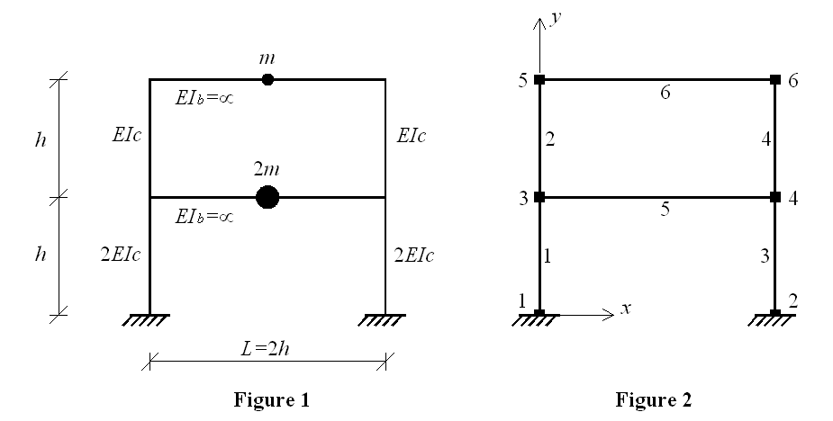

Matrix Eigenvalue Analysis
5 min read • 902 wordsThis example demonstrates how to perform eigenvalue analysis and plot mode shapes.
This example is adapted from the OpenSees Wiki page Eigen analysis of a two-storey shear frame .
This example demonstrates how to perform eigenvalue analysis and plot mode shapes.
An idealized two-storey shear frame (Example 10.4 from “Dynamic of Structures” book by Professor Anil K. Chopra) is used for this purpose. In this idealization beams are rigid in flexure, axial deformation of beams and columns are neglected, and the effect of axial force on the stiffness of the columns is neglected. Geometry and material characteristics of the frame structure are shown in Figure 1. Node and element numbering is given in Figure 2.

To execute this ananlysis in OpenSees the user has to download this files:
Place EigenAnal_twoStoryShearFrame.tcl in the same folder with the
OpenSees.exe. By double clicking on OpenSees.exe the OpenSees
interpreter will pop out. To run the analysis the user should type:
and hit enter. To create output files (stored in directory “data”) the user has to exit OpenSees interpreter by typing “exit”.
Spatial dimension of the model and number of degrees-of-freedom (DOF) at nodes are defined using model command. In this example we have 2D model with 3 DOFs at each node. This is defined in the following way:
Note: geometry, mass, and material characteristics are assigned to variables that correspond to the ones shown in Figure 1 (e.g., the height of the column is set to be 144 in. and assigned to variable h; the value of the height can be accessed by $h).
Nodes of the structure (Figure 2) are defined using the node command:
The boundary conditions are defined next using single-point constraint command fix. In this example nodes 1 and 2 are fully fixed at all three DOFs:
Masses are assigned at nodes 3, 4, 5, and 6 using mass command. Since the considered shear frame system has only two degrees of freedom (displacements in x at the 1st and the 2nd storey), the masses have to be assigned in x direction only.
The geometric transformation with id tag 1 is defined to be linear.
set TransfTag 1;
geomTransf Linear $TransfTag ; The beams and columns of the frame are defined to be elastic using elasticBeamColumn element. In order to make beams infinitely rigid moment of inertia for beams (Ib) is set to very high value (10e+12).
To comply with the assumptions of the shear frame (no vertical displacemnts and rotations at nodes) end nodes of the beams are constrained to each other in the 2nd DOF (vertical displacement) and the 3rd DOF (rotation). EqualDOF command is used to imply these constraints.
equalDOF 3 4 2 3;
equalDOF 5 6 2 3;For the specified number of eigenvalues (numModes) (for this example it is 2) the eigenvectors are recorded at all nodes in all DOFs using node recorder command.
The eigenvalues are calculated using eigen commnad and stored in lambda variable.
set lambda [eigen $numModes];The periods and frequencies of the structure are calculated next.
set omega {}
set f {}
set T {}
set pi 3.141593
foreach lam $lambda {
lappend omega [expr sqrt($lam)];
lappend f [expr sqrt($lam)/(2*$pi)];
lappend T [expr (2*$pi)/sqrt($lam)];
}The periods are stored in a Periods.txt file inside of directory
modes/.
set period "modes/Periods.txt"
set Periods [open $period "w"]
foreach t $T {
puts $Periods " $t"
}
close $Periods For eigenvectors to be recorded record command has to be issued following the eigen command.
recordTODO
Example Provided by: Vesna Terzic, UC Berkeley